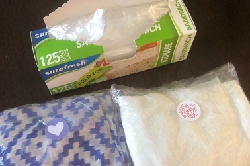
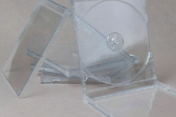

Polyethylene Terephthalate (PET or PETE)

IN THE RECYCLING BIN!
Water Bottles
Soda Bottles
Food Jars
Salad Dressing
Mouthwash Bottles
Does your plastic fall under the category above?
PET plastic is recyclable and about 25% of PET bottles in the US today are recycled. The plastic is crushed and then shredded into small flakes which are then reprocessed to make new PET bottles, or spun into polyester fiber.
Not Accepted in Your Bin
Is your plastic clear in color?
PET is one of the most commonly used plastics in consumer products, and is found in most water and pop bottles, and some packaging.
Not Accepted in Your Bin
Did you use multiple times?
It is intended for single use applications; repeated use increases the risk of leaching and bacterial growth.
Not Accepted in Your Bin
Did you clean and dry the container?
PET plastic is difficult to decontaminate, and proper cleaning requires harmful chemicals. Polyethylene terephthalates may leach carcinogens. Clean and dry containers, then put the cap back on before tossing in the bin.
Not Accepted in Your Bin
High-Density Polyethylene (HDPE)
IN THE RECYCLING BIN!
Shampoo Bottles
Milk Jugs
Toys
Cosmetics
Detergent Bottles
Does your plastic fall under the category above?
HDPE plastics are also extremely common. They’re those used to make milk jugs, shampoo bottles, cleaning product containers and detergent bottles.
Not Accepted in Your Bin
Is your plastic clear in color?
HDPE plastic is very hard-wearing and does not break down under exposure to sunlight or extremes of heating or freezing. For this reason, HDPE is used to make picnic tables, plastic lumber, waste bins, park benches, bed liners for trucks and other products which require durability and weather-resistance.
Not Accepted in Your Bin
Did you use multiple times?
HDPE is the most commonly recycled plastic and is considered one of the safest forms of plastic. It is a relatively simple and cost-effective process to recycle HDPE plastic for secondary use. It can be reused without any harm.
Not Accepted in Your Bin
Did you clean and dry the container?
It is difficult to decontaminate, and proper cleaning requires harmful chemicals. Make sure containers are completely empty to avoid contamination. Clean and dry containers, then put the cap back on before tossing in the bin.
Not Accepted in Your Bin
Polyvinyl Chloride (PVC)
IN THE RECYCLING BIN!
Shower Curtains
Pipes
Clear Food Wrap
Electrical Boxes and Cables
Hoses
Does your plastic fall under the category above?
PVC is dubbed the “poison plastic” because it contains numerous toxins which it can leach throughout its entire life cycle. Almost all products using PVC require virgin material for their construction; less than 1% of PVC material is recycled.
Not Accepted in Your Bin
Is your plastic soft and flexible?
PVC is a soft, flexible plastic used to make clear plastic food wrapping, cooking oil bottles, teething rings, children’s and pets’ toys, and blister packaging for myriad consumer products. It is commonly used as the sheathing material for computer cables, to make plastic pipes and parts for plumbing, and in garden hoses.
Not Accepted in Your Bin
Low-Density Polyethylene (LDPE)
IN THE RECYCLING BIN!

Grocery Bags
Sandwich Bags
Wrapping Films
Frozen Food Bags
Packaging Foam
Does your plastic fall under the category above?
LDPE is considered less toxic than other plastics, and relatively safe for use. It is not commonly recycled, however, although this is changing in many communities today as more plastic recycling programs gear up to handle this material.
Not Accepted in Your Bin
Is your plastic elastic?
LDPE is often found in shrink wraps, dry cleaner garment bags, squeezable bottles, and the type of plastic bags used to package bread. The plastic grocery bags used in most stores today are made using LDPE plastic.
Not Accepted in Your Bin
Does your plastic not contain recyclables or other object?
Do not bag recyclables as materials inside may not get recycled. Reuse plastic bags, or learn where you can recycle them at plasticfilmrecycling.org.
Not Accepted in Your Bin
Polypropylene (PP)
IN THE RECYCLING BIN!
Yogurt Containers
Syrup Bottles
Straws
Medicine Containers
Ice-cream Containers
Does your plastic fall under the category above?
Polypropylene is recyclable through some curbside recycling programs, but only about 3% of PP products are currently being recycled in the US. Recycled PP is used to make landscaping border stripping, battery cases, brooms, bins and trays. However, #5 plastic is today becoming more accepted by recyclers.
Not Accepted in Your Bin
Is your plastic tough and lightweight?
Polypropylene plastic is tough and lightweight, and has excellent heat-resistance qualities. It serves as a barrier against moisture, grease and chemicals. When you try to open the thin plastic liner in a cereal box, it is polypropylene.
Not Accepted in Your Bin
Did you make sure the container is completely empty?
Make sure containers are completely empty to avoid contamination.
Not Accepted in Your Bin
Did you clean and dry the container?
Clean and dry containers, then put the cap back on before tossing in the bin. PP is considered safe for reuse. To recycle products made from PP, check with your local curbside program to see if they are now accepting this material.
Not Accepted in Your Bin
Polystyrene, or Styrofoam
IN THE RECYCLING BIN!
Plastic Cups
Coffee Cups
Packing Peanuts
Styrofoam
CD Cases
Does your plastic fall under the category above?
Recycling is not widely available for polystyrene products. Most curbside collection services will not accept polystyrene, which is why this material accounts for about 35% of US landfill material. While the technology for recycling polystyrene is available, the market for recycling is small.
Not Accepted in Your Bin
Is your plastic lightweight and structurally weak?
Polystyrene is an inexpensive, lightweight and easily-formed plastic with a wide variety of uses. It is most often used to make disposable foam drinking cups, take-out “clamshell” food containers, egg cartons, plastic picnic cutlery, foam packaging and those ubiquitous “peanut” foam chips used to fill shipping boxes to protect the contents.
Not Accepted in Your Bin
Is your plastic not contaminated by food?
Polystyrene may leach styrene, a possible human carcinogen, into food products (especially when heated in a microwave). Chemicals present in polystyrene have been linked with human health and reproductive system dysfunction.
Not Accepted in Your Bin
'Other'
IN THE RECYCLING BIN!
Sport Bottles and Equipment
Baby Bottles
Lids
Car Parts
Medical Equipment
Does your plastic fall under the category above?
The #7 category was designed as a catch-all for polycarbonate (PC) and “other” plastics, so reuse and recycling protocols are not standardized within this category. Of primary concern with #7 plastics, however, is the potential for chemical leaching into food or drink products packaged in polycarbonate containers made using BPA (Bisphenol A).
Not Accepted in Your Bin
Is your plastic new plastics, bioplastics, or items composed of different types of plastics?
Plastic number 7 includes new plastics, bioplastic, and items composed of different types of plastics. This recycling logo also stands for polycarbonate (PC) which contains highly dangerous BPA (Bisphenol A). Try to avoid products with the PC label.
Not Accepted in Your Bin